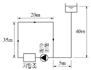
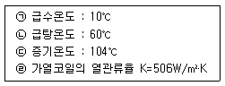
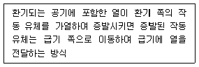
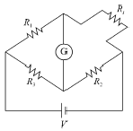
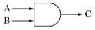
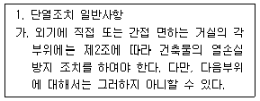
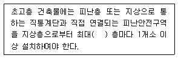
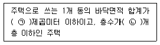
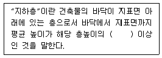

건축설비기사 (2016-03-06 기출문제)
1과목: 건축일반
1. 상점의 매장계획에 관한 설명으로 옳지 않은 것은?
- 상품이 고객 쪽에서 효과적으로 보이도록 한다.
- 고객의 동선은 짧게, 점원의 동선은 길게 한다.
- 고객과 직원의 시선이 바로 마주치지 않도록 배치한다.
- 고객을 감시하기 쉬워야 한다.
(정답률: 95%)

2. 건축화 조명에 대한 설명 중 옳지 않은 것은?
- 코니스 조명은 벽면조명으로 천장과 벽면의 경계부에 설치한다.
- 조명기구를 천장, 벽 등의 실 구성면 중에 장치하여 건축 내장의 일부와 같은 취급을 한 조명 방식을 건축화 조명이라 한다.
- 광천장은 천장을 확산투과 혹은 지향성 투과패널로 덮고, 천장 내부에 광원을 일정한 간격으로 배치한 것이다.
- 천장면에 루버를 설치하고 그 속에 광원을 배치하는 방식을 코브 라이트라 한다.
(정답률: 73%)
3. 공기환경측정과 관련된 측정방법이 잘못 연결된 것은?
- 유속 측정 - 프로펠라 풍속계
- 압력 측정 - 다이어프램 차압계
- 환기량 측정 - 가스추적법
- 가스농도 측정 - 피토우관
(정답률: 76%)
4. 사무소 건축에 있어서 개방식 배치에 관한 설명으로 옳지 않은 것은?
- 소음이 들리고 독립성이 결핍되어 있는 결점이 있다.
- 칸막이벽이 없어서 개실 시스템보다 공사비가 적게 든다.
- 공간에 융통성이 없어 전면적을 유용하게 이용할 수 없다.
- 큰 사무실 형식에 많이 채용되며 임대자가 직접 이동식 파티션 등으로 적절한 프라이버시를 확보한다.
(정답률: 90%)
5. 음의 성질에 관련된 용어에 대한 설명으로 옳지 않은 것은?
- 파동이 진행 중에 장애물이 있으면 직진하지 않고 그 뒤쪽으로 돌아가는 현상을 회절이라 한다.
- 진동수가 조금 다른 두 음이 간섭에 의해서 생기는 현상을 울림이라 한다.
- 발음체로부터 나오는 음파를 다른 물체가 흡수하여 같이 소리를 내는 현상을 파동이라 한다.
- 실내에서 음을 갑자기 멈추면 그 음이 수초간 남아있는 현상을 잔향이라 한다.
(정답률: 78%)
6. 치수조정(Modular Coordination)의 장점이 아닌 것은?
- 설계작업의 간편화
- 공기단축
- 소량생산의 특화
- 생산비의 절감
(정답률: 89%)
7. 다음 중 목조계단의 구성부재에 해당되지 않는 것은?
- 달대
- 챌판
- 엄지기둥
- 두겁대
(정답률: 84%)
8. 백화점 기능의 4영역 특성에 관한 설명으로 옳지 않은 것은?
- 고객권은 서비스 시설 부분으로 대부분 매장에 결합되며 종업원권과는 멀리 떨어진다.
- 종업원권은 매장 외에 상품권과 접하게 된다.
- 상품권은 판매권과 접하여 고객권과는 절대 분리시킨다.
- 판매권은 상품을 전시하여 영업하는 장소이다.
(정답률: 65%)
9. 주택의 욕실에서 소리가 잘 울려 퍼지는 이유로 가장 타당한 것은?
- 욕조에 물이 있으므로
- 벽체가 얇기 때문에
- 마무리 재료의 흡음율이 낮으므로
- 공기의 습도가 높으므로
(정답률: 90%)
10. 도서관 열람실의 계획조건에 관한 유의사항 중 옳지 않은 것은?
- 실내외의 소음을 차단할 수 있어야 한다.
- 타실과의 연결을 좋게 하기 위해 중앙 위치에서 통로 역할을 해야 한다.
- 서고 가까이에 위치하도록 한다.
- 채광을 적당히 받도록 하기 위해서 남향이 유리하다.
(정답률: 79%)
11. 결로에 관한 설명 중 옳지 않은 것은?
- 난방이나 단열을 통하여 결로의 원인을 제거할 수 있다.
- 주택의 환기횟수를 감소시키면 결로의 감소가 가능하다.
- 결로는 구조재의 실내 습기의 과다발생 등이 그 원인 중의 하나이다.
- 결로는 발생부위에 따라 표면결로와 내부결로로 분류할 수 있다.
(정답률: 90%)
12. 기초의 계획 및 설치에 관한 유의사항으로 옳지 않은 것은?
- 지하실은 가급적 건물 전체에 균등히 설치하여 침하를 줄이는데 유의한다.
- 지반의 상태가 고르지 못하거나 편심 하중이 작용하는 건축물의 기초는 서로 다른 형태의 기초나 말뚝을 혼용하는 것이 좋다.
- 기초를 땅속 경사가 심한 굳은 지반에 올려놓을 경우 슬라이딩의 위험성을 고려해야 한다.
- 지중보를 충분히 설치하면 기초의 강성이 높아지므로 부동침하 방지에 도움이 된다.
(정답률: 81%)
13. 한식주택과 양식주택에 대한 설명으로 옳지 않은 것은?
- 한식주택은 개방형이며 실의 분화로 되어 있다.
- 양식주택의 방은 일반적으로 단일용도로 사용된다.
- 양식주택은 입식 생활이다.
- 한식주택의 가구는 부차적 존재이다.
(정답률: 83%)
14. 건축물 뼈대의 역학적 구조 양식상 분류에 해당하지않는 것은?
- 가구식구조
- 일체식구조
- 내력벽식구조
- 철근콘크리트구조
(정답률: 68%)
15. 온열환경에 대한 인체의 쾌적성을 평가하는 PMV(예상온열감)를 산출하는데 필요한 요소가 아닌 것은?
- 일사량
- 착의량
- 평균복사온도
- 수증기분압
(정답률: 52%)
16. 병원 수술실의 계획요건에 관한 설명으로 옳지 않은 것은?
- 수술실 실내의 온도는 26.6℃ 이상, 습도는 55% 이상으로 하는 것이 좋다.
- 수술실의 공기조화설비는 공기재순환이 원활하게 될 수 있도록 한다.
- 수술실 출입문 손잡이는 자동문이나 팔꿈치 조작식으로 한다.
- 마취약은 폭발성이 있는 경우가 있으므로 모든 전기 기구는 스파크 방지 장치가 있는 것을 사용해야 한다.
(정답률: 83%)
17. 철골구조의 고력볼트 접합에 관한 설명으로 옳은 것은?
- 단면결함이 없고, 자유로운 접합형식을 취할 수 있다.
- 소음발생이 없다.
- 접합방식에는 마찰접합, 지압접합 등이 있다.
- 진동 또는 반복하중을 받는 부분에 사용하면 접합부위가 느슨해질 수 있기 때문에 주의해야 한다.
(정답률: 61%)
18. 학교운영방식 중 교과교실형(V형)에 대한 설명으로 옳지 않은 것은?
- 모든 교실이 특정교과를 위해서 사용되고 일반교실은 없다.
- 교과목에 필요한 시설의 질을 높일 수 있다.
- 학생들의 이동이 심하므로 동선 설계에 유의해야 한다.
- 초등학교 저학년에 대해 가장 권장할 만한 형이다.
(정답률: 88%)
19. 곡면판이 지니는 역학적 특성을 응용한 구조로서 외력은 주로 판의 면내력으로 전달되기 때문에 경량이고 내력이 큰 구조물을 구성할 수 있는 구조는?
- 절판구조
- 셸구조
- 현수구조
- 입체트러스구조
(정답률: 75%)
20. 무량판 구조의 특성으로 옳지 않은 것은?
- 바닥에 보가 전혀 없이 바닥판만으로 구성된다.
- 구조가 간단하여 공사비가 저렴하다.
- 주두의 철근층이 여러 겹이고 바닥판이 두껍다.
- 실내공간 이용률이 낮아지고 층높이가 높아진다.
(정답률: 75%)
2과목: 위생설비
21. 펌프의 양수량 0.1m3/min, 양정 100m, 펌프의 효율 50% 일 때 펌프의 축동력은?
- 약 3.3kW
- 약 4.1kW
- 약 4.4kW
- 약 5.0kW
(정답률: 72%)
22. 루프통기방식에 관한 설명으로 옳지 않은 것은?
- 회로통기방식이라고도 한다.
- 통기수직관을 설치한 배수∙통기계통에 이용된다.
- 2개 이상의 기구트랩에 공통으로 하나의 통기관을 설치하는 방식이다.
- 배수∙통기 양 계통간의 공기의 유통을 원활히 하기위해 설치하는 통기관이다.
(정답률: 54%)
23. 쇄형 스프링클러헤드를 사용하는 스프링클러설비에서 하나의 방호구역의 바닥면적은 최대 얼마 이하가 되도록 하여야 하는가? (단, 격자형 배관방식이 아닌 경우)
- 1,000m2
- 2,000m2
- 3,000m2
- 4,000m2
(정답률: 54%)
24. 아파트 건물의 1일 급탕량에 대한 1시간당 최대 급탕량의 비율은?
- 1/7
- 1/6
- 1/5
- 1/4
(정답률: 53%)
25. 가스계량기의 설치위치에 관한 기준 내용으로 옳지 않은 것은?
- 전기계량기와는 30cm 이상의 거리를 유지할 것
- 전기점멸기 및 전기접속기와는 30cm 이상의 거리를 유지할 것
- 단열조치를 하지 아니한 굴뚝과는 30cm 이상의 거리를 유지할 것
- 절연조치를 하지 아니한 전선과는 15cm 이상의 거리를 유지할 것
(정답률: 73%)
26. 다음 급수방식의 조합 중 가장 에너지 절약적인 것은?
- 저층부 수도직결방식과 고층부 고가탱크방식
- 저층부 수도직결방식과 고층부 압력탱크방식
- 저층부 압력탱크방식과 고층부 펌프직송방식
- 저층부 펌프직송방식과 고층부 고가탱크방식
(정답률: 82%)
27. 생물학적 오수처리방법 중 활성오니법에 속하는 것은?
- 접촉산화방식
- 살수여상방식
- 장기간폭기방식
- 회전원판접촉방식
(정답률: 72%)
28. 배관재료 중 염화비닐관에 관한 설명으로 옳지 않은 것은?
- 열팽창률이 강관보다 크다.
- 비중은 1.4~1.6 정도로 가볍다.
- 산, 알칼리 및 염류에 대한 내식성이 약하다.
- 전기적 저항이 크고 전식작용(電蝕作用)이 없다.
(정답률: 79%)
29. 배관 내에서 급수전이나 밸브 등을 급폐쇄 하였을 때 압력변동으로 인하여 소음∙진동이 발생하는 현상은?
- 서징
- 수격작용
- 수주분리
- 캐비테이션
(정답률: 79%)
30. 그림과 같은 급탕방식에 있어서 급탕순환펌프의 전양정은? (단, 순환 배관에서의 전마찰손실은 1,000mmAq이다.)

- 1mAq
- 35mAq
- 40mAq
- 110mAq
(정답률: 56%)
31. 급수설비에 관한 설명으로 옳지 않은 것은?
- 고가탱크방식은 수전에서의 압력변동이 거의 없다.
- 세정밸브식 대변기의 급수관 관경은 15mm 이상으로 한다.
- 펌프직송방식은 고가탱크방식에 비해 수질오염의 가능성이 적다.
- 급수압력이 높으면 수전의 파손원인이 되며 또한 수격작용도 일으키기 쉽다.
(정답률: 77%)
32. 다음과 같은 조건에서 급탕량이 2,000L/h인 저탕조의 가열코일 표면적은?

- 약 3.3m2
- 약 6.6m2
- 약 33.3m2
- 약 65.9m2
(정답률: 49%)
33. 각개통기관의 관경은 최소 얼마 이상으로 하는가?
- 20mm
- 25mm
- 30mm
- 40mm
(정답률: 52%)
34. 위생기구의 동시사용률은 기구의 수량과 어떤 관계가 있는가?
- 기구수와 관계없다.
- 기구수가 증가하면 커진다.
- 기구수가 증가하면 작아진다.
- 기구수가 증가하면 처음에는 커지다가 작아진다.
(정답률: 73%)
35. 수질과 관련된 용어의 설명으로 옳지 않은 것은?
- COD는 화학적 산소요구량을 말한다.
- BOD는 생물화학적 산소요구량을 말한다.
- SS는 증발잔류물로서 부유물과 용해성 물질의 합계를 말한다.
- 총질소는 무기성 및 유기성 질소의 총량을 나타낸 것이다.
(정답률: 82%)
36. 다음 중 모세관 현상에 따른 트랩의 봉수파괴를 방지하기 위한 방법으로 가장 알맞은 것은?
- 트랩을 자주 청소한다.
- 각개통기관을 설치한다.
- 관내 압력변동을 작게 한다.
- 기구배수관 관경을 트랩구경보다 크게 한다.
(정답률: 79%)
37. 연결살수설비의 송수구에 관한 기준 내용으로 옳지 않은 것은?
- 송수구는 구경 32mm의 쌍구형으로 설치하여야 한다.
- 지면으로부터 높이가 0.5m 이상 1.0m 이하의 위치에 설치하여야 한다.
- 소방차가 쉽게 접근할 수 있고 노출된 장소에 설치하는 것이 원칙이다.
- 개방형 헤드를 사용하는 송수구의 호스접결구는 각 송수구역마다 설치하는 것이 원칙이다.
(정답률: 83%)
38. 펌프의 유효흡입수두(NPSH)를 계산할 때 필요한 요소가 아닌 것은?
- 토출관 내에서의 손실수두
- 흡입수면에서 펌프 중심까지의 높이
- 유체의 포화수증기압에 상당하는 수두
- 흡입측 수조의 수면에 걸리는 압력에 상당 하는 수두
(정답률: 55%)
39. 오물을 직접 트랩 내의 유수 중에 낙하시켜 물의 낙차에 의해 오물을 배출하는 방식으로, 취기의 발산은 비교적 적지만 유수면이 비교적 좁아서 오물이 부착하기 쉬운 형식은?
- 세락식
- 사이폰식
- 블로아웃식
- 사이폰제트식
(정답률: 69%)
40. 종국유속과 관계있는 배관은?(오류 신고가 접수된 문제입니다. 반드시 정답과 해설을 확인하시기 바랍니다.)
- 기구배수관
- 배수수직관
- 배수수평지관
- 배수수평주관
(정답률: 63%)
3과목: 공기조화설비
41. 다음 중 전차폐계수(SCT)의 값이 가장 큰 유리는? (단, 내부 차폐가 없으며, ( )안의 숫자는 유리의 두께(mm)이다.)
- 보통유리(3)
- 보통유리(6)
- 흡열유리(6)
- 흡열유리(12)
(정답률: 66%)
42. 습공기를 가열하였을 경우 상태량이 감소하는 것은?
- 비체적
- 엔탈피
- 상대습도
- 절대습도
(정답률: 75%)
43. 공기에 관한 설명으로 옳지 않은 것은?
- 지상 부근 공기의 성분비율은 수증기를 제외하면 거의 일정하다.
- 여러 기체의 혼합물로 산소와 이산화탄소가 가장 많은 부분을 차지한다.
- 수증기를 전혀 함유하지 않은 건조한 공기를 가상하여 건조공기라 부른다.
- 건조공기는 이상기체에 가까운 성질을 갖고 있으므로 이상기체로 간주하여 계산될 수 있다.
(정답률: 70%)
44. 환기 방법 중 열기나 유해물질이 실내에 널리 산재 되어 있거나 이동되는 경우에 사용하며, 전체환기라고도 불리우는 것은?
- 일시환기
- 희석환기
- 중력환기
- 자연환기
(정답률: 78%)
45. 냉열원기기에 관한 설명으로 옳지 않은 것은?(오류 신고가 접수된 문제입니다. 반드시 정답과 해설을 확인하시기 바랍니다.)
- 냉열원기기는 원칙적으로 보일러와 동일한 공간에 설치한다.
- 냉열원기기는 건축규모, 부분부하, 부하경향 등을 기초로 대수 분할을 고려한다.
- 냉열원기기의 냉수 및 냉각수는 원칙적으로 유량을 변화시키지 않는 것으로 한다.
- 냉온수 배관 회로 설치 시 순환펌프는 원칙적으로 냉열원기기마다 각 1대씩 설치한다.
(정답률: 53%)
46. 다음과 같은 열교환 방식을 갖는 폐열회수기의 종류는?

- 판형 열교환식
- 로터형 열교환식
- 히트파이프형 열교환식
- 모세 송풍기형 열교환식
(정답률: 69%)
47. 공기여과기를 통과하기 전의 오염농도 C1= 0.45mg/m3, 통과한 후의 오염농도 C2= 0.12mg/m3이다. 이 여과기의 여과효율은?
- 약 27%
- 약 42%
- 약 58%
- 약 73%
(정답률: 72%)
48. 저압증기배관에 관한 설명으로 옳지 않은 것은?
- 증기주관 곡부에는 밴드관을 사용한다.
- 순구배 배관의 말단부에는 관말트랩을 설치한다.
- 배관의 분기부에는 밸브를 설치하여서는 안된다.
- 분류∙합류에 T이음쇠를 사용하는 경우는 90° T자형을 이용해서는 안된다.
(정답률: 61%)
49. 장방형 덕트 단면의 아스펙트비는 원칙적으로 최대 얼마 이하로 하는가?
- 2:1
- 3:1
- 4:1
- 5:1
(정답률: 66%)
50. 공기조화방식 중 2중덕트방식에 관한 설명으로 옳지 않은 것은?
- 전공기방식에 속한다.
- 냉∙온풍의 혼합으로 인한 혼합손실이 있다.
- 부하특성이 다른 다수의 실이나 존에는 적용할 수 없다.
- 단일덕트방식에 비해 덕트 샤프트 및 덕트 스페이스를 크게 차지한다.
(정답률: 68%)
51. 유량조절용으로 사용되며 유체의 흐름방향을 90°로 전환시킬 수 있는 밸브는?
- 볼 밸브
- 체크 밸브
- 앵글 밸브
- 게이트 밸브
(정답률: 83%)
52. 수배관에 관한 설명으로 옳지 않은 것은?
- 배관의 신축을 고려한다.
- 배관재료는 내식성을 고려한다.
- 온수배관에는 공기가 고이지 않도록 구배를 준다.
- 온수보일러의 팽창관에는 게이트 밸브를 설치한다.
(정답률: 80%)
53. 다음 중 증기 트랩에 속하지 않는 것은?
- 벨 트랩
- 버킷 트랩
- 플로트 트랩
- 벨로즈 트랩
(정답률: 61%)
54. 공조조닝의 종류 중 내부존의 조닝에 속하지 않는 것은?
- 방위별 조닝
- 현열비별 조닝
- 부하 특성별 조닝
- 용도에 따른 시간별 조닝
(정답률: 63%)
55. 공기조화방식의 열운송 동력의 크기 순서가 옳게 나열된 것은?
- 전공기방식 ＞ 전수방식 ＞ 공기∙수방식
- 공기∙수방식 ＞ 전수방식 ＞ 전공기방식
- 전공기방식 ＞ 공기∙수방식 ＞ 전수방식
- 전수방식 ＞ 공기∙수방식 ＞ 전공기방식
(정답률: 69%)
56. 다음 중 2중효용식 흡수식 냉동기의 구성요소에 속하지 않는 것은?
- 응축기
- 압축기
- 증발기
- 저온발생기
(정답률: 58%)
57. 덕트의 구성에 관한 설명으로 옳지 않은 것은?
- 방화구획 관통부에는 방화댐퍼 또는 방연댐퍼를 설치한다.
- 분기는 저항이 큰 부속을 우선적으로 사용하는 것을 원칙으로 한다.
- 주덕트의 주요 분기점, 송풍기 출구측에는 풍량조절댐퍼를 설치한다.
- 장방형 덕트의 분기∙합류방식은 원칙적으로 분할삽입 방식으로 한다.
(정답률: 72%)
58. 다음 중 현열로만 구성된 냉방부하의 종류는?
- 인체의 발생열량
- 유리로부터의 취득열량
- 극간풍에 의한 취득열량
- 외기의 도입으로 인한 취득열량
(정답률: 78%)
59. 건구온도 35℃인 외기와 건구온도 25℃인 실내 공기를 4 : 6으로 혼합할 경우 혼합공기의 건구 온도는?
- 28℃
- 29℃
- 30℃
- 31℃
(정답률: 72%)
60. 어느 송풍기의 회전속도가 500rpm일 때 송풍량은 50m3/min 이었다. 이 송풍기의 회전속도를 750rpm으로 변화시켰을 때 송풍량은?
- 75m3/min
- 87m3/min
- 95m3/min
- 107m3/min
(정답률: 75%)
4과목: 소방 및 전기설비
61. 변압기는 다음 중 무슨 현상을 응용한 것인가?
- 정전유도
- 전자유도
- 전계유도
- 전압유도
(정답률: 70%)
62. 다음 중 전하간의 정전유도현상과 관계가 가장 먼것은?
- 낙뢰
- 정전기
- 전자석
- 전기집진기
(정답률: 57%)
63. 비상콘센트설비에서 비상콘센트의 설치 높이로 옳은 것은?
- 바닥으로부터 높이 0.3[m] 이상 0.5[m] 이하
- 바닥으로부터 높이 0.6[m] 이상 0.8[m] 이하
- 바닥으로부터 높이 0.8[m] 이상 1.5[m] 이하
- 바닥으로부터 높이 1.2[m] 이상 2.0[m] 이하
(정답률: 75%)
64. 그림과 같은 브릿지 회로에서 백금저항체 Rt로 측정할 수 있는 것은?

- 온도
- 습도
- 압력
- 산성도
(정답률: 74%)
65. 논리회로 중 논리합(OR Gate) 회로에 관한 설명으로 옳은 것은?
- 2개의 입력 신호 모두가 없을 때 출력회로가 동작한다.
- 2개의 입력 신호에 관계없이 계속 출력회로가 동작한다.
- 2개의 입력 신호 중 1개만 입력이 되면 출력회로가 동작한다.
- 2개의 입력 신호 모두가 입력이 되어야 출력회로가 동작한다.
(정답률: 80%)
66. 전류가 전선을 통하여 흐르는 동안 임피던스에 의하여 전위가 낮아지는 현상은?
- 전력강하
- 전압강하
- 전류강하
- 임피던스강하
(정답률: 66%)
67. 어느 학교의 교실에 32[W] 2구형 형광등기구를 설치하여 400[lx]로 설계하고자 할 때 설치하여야 하는 등기구는 최소 개수는? (단, 교실의 크기는 10[m]×20[m], 형광등 1개 광속은 3,000[lm], 조명률은 0.6, 보수율은 0.8로 한다.)
- 15개
- 28개
- 30개
- 55개
(정답률: 63%)
68. 다음 중 저항률이 가장 작은 것은?
- 금(Au)
- 은(Ag)
- 구리(Cu)
- 알루미늄(Al)
(정답률: 64%)
69. 3상 유도전동기의 출력이 5.5[kW], 전압이 200[V], 효율이 90[%], 역률이 80[%]일 때, 이 전동기에 유입되는 선전류는?
- 약 15[A]
- 약 20[A]
- 약 22[A]
- 약 25[A]
(정답률: 48%)
70. 다음 중 HID(고휘도방전) 램프의 종류에 속하지 않는 것은?
- 할로겐 램프
- 고압수은 램프
- 고압나트륨 램프
- 메탈할라이드 램프
(정답률: 68%)
71. 온도, 압력, 유량 및 액면 등과 같은 제어량을 제어하는데 주로 사용되는 제어 방법은?
- 추종제어
- 시퀸스제어
- 프로세스제어
- 프로그램제어
(정답률: 59%)
72. 다음 중 보일러실이나 주방에 가장 적당한 열감기지는?
- 광전식
- 이온화식
- 정온식 스폿형
- 차동식 스폿형
(정답률: 72%)
73. 유도등의 비상전원은 유도등을 최소 몇 분 이상 유효하게 작동시킬 수 있는 용량으로 하여야 하는가?
- 10분
- 20분
- 30분
- 40분
(정답률: 78%)
74. 전동기 기동방식 중 유도전동기의 기동방법이 아닌것은?
- 직입기동방식
- Y-△기동방식
- 리액터 기동방식
- 동기전동기 기동방식
(정답률: 56%)
75. 변압기의 여자 전류에 가장 많이 포함된 고조파는?
- 제2 고조파
- 제3 고조파
- 제4 고조파
- 제5 고조파
(정답률: 73%)
76. 다음의 전동기 제동방법 중 손실이 가장 적은 것은?
- 역전제동
- 발전제동
- 회생제동
- 단상제동
(정답률: 71%)
77. 전기회로에 관한 설명으로 옳은 것은?
- 선로에서 저항은 도체의 길이와 도체의 단면적에 비례한다.
- 전류는 어떤 도체의 단면적을 1[초]간 통과한 전하량을 말한다.
- 회로망에서 테브난의 등가회로는 전류원과 내부저항의 병렬회로로 변환하는 것이다.
- 일반용 1.5[V] 건전지에서 양(+)극을 0전위로 하였을 때 음(-)극의 전위는 +1.5[V]이다.
(정답률: 61%)
78. 저항이 15[Ω]과 25[Ω]인 전열기 두 대를 직렬로 연결하여 사용할 때, 이 회로의 전류는? (단, 회로 양단의 전압은 220[V]이다.)
- 5.5[A]
- 6.7[A]
- 8.4[A]
- 10[A]
(정답률: 73%)
79. 아래 그림의 논리기호의 논리식은?

- A∙B=C
- A+B=C
- A÷B=C
- A-B=C
(정답률: 75%)
80. 정전용량이 같은 콘덴서 10개를 병렬접속할 때의 합성정전용량은 직렬접속할 때의 합성정전용량의 몇 배가 되는가?
- 10배
- 100배
- 200배
- 250배
(정답률: 68%)
5과목: 건축설비관계법규
81. 대형건축물의 건축허가 사전승인신청시 제출도서의 종류 중 설비분야의 도서에 속하지 않는 것은?
- 소방설비도
- 건축설비도
- 주차장 평면도
- 상∙하수도 계통도
(정답률: 78%)
82. 다중이용시설을 신축하는 경우에 설치하여야 하는 기계환기설비의 구조 및 설치에 관한 기준 내용으로 옳지 않은 것은?
- 다중이용시설의 기계환기설비 용량기준은 시설이용인원 당 환기량을 원칙으로 산정할 것
- 기계환기설비는 다중이용시설로 공급되는 공기의 분포를 최대한 균등하게 하여 실내 기류의 편차가 최소화될 수 있도록 할 것
- 공기배출체계 및 배기구는 배출되는 공기가 공기공급체계 및 공기흡입구로 직접 들어가는 위치에 설치할 것
- 공기공급체계 ㆍ 공기배출체계 또는 공기흡입구∙배기구 등에 설치되는 송풍기는 외부의 기류로 인하여 송풍능력이 떨어지는 구조가 아닐 것
(정답률: 75%)
83. 헬리포트의 설치에 관한 기준 내용으로 옳지 않은 것은?
- 헬리포트의 길이와 너비는 각각 25m 이상으로 할 것
- 헬리포트의 중앙부분에는 지름 8m의“ⓗ”표지를 백색으로 할 것
- 헬리포트의 주위한계선은 백색으로 하되, 그 선의 너비는 38cm로 할 것
- 헬리포트의 중심으로부터 반경 12m 이내에는 헬리콥터의 이∙착륙에 장애가 되는 건축물, 공작물, 조경시설 또는 난간 등을 설치하지 아니할 것
(정답률: 60%)
84. 건축물에 건축설비를 설치하는 경우 관계전문기술자의 협력을 받아야 하는 대상 건축물의 연면적 기준은? (단, 창고시설 제외)
- 1,000m2 이상
- 2,000m2 이상
- 5,000m2 이상
- 10,000m2 이상
(정답률: 52%)
85. 문화 및 집회시설 중 공연장의 개별관람석의 출구는 관람석별로 최소 몇 개소 이상 설치하여야 하는가? (단, 개별관람석의 바닥면적이 300m2 이상인 경우)
- 1개소
- 2개소
- 3개소
- 4개소
(정답률: 75%)
86. 다음은 건축물의 에너지절약 설계기준상 건축 부문의 의무사항 내용이다. 밑줄 친 “부위”의 기준 내용으로 옳지 않은 것은?

- 바닥면적 150m2 이하의 개별 점포의 출입문
- 공동주택의 층간바닥 중 바닥난방을 하는 현관 및 욕실의 바닥 부위
- 지면 및 토양에 접한 바닥 부위로서 난방공간의 외벽 내표면까지의 모든 수평거리가 10m를 초과하는 바닥 부위
- 지표면 아래 2m를 초과하여 위치한 지하 부위(공동주택의 거실 부위는 제외)로서 이중벽의 설치 등 하계 표면결로 방지 조치를 한 경우
(정답률: 53%)
87. 건축물의 설비기준 등에 관한 규칙에 따라 피뢰설비를 설치하여야 하는 대상 건축물의 높이 기준은?
- 10m 이상
- 15m 이상
- 20m 이상
- 30m 이상
(정답률: 77%)
88. 다음은 직통계단의 설치에 관한 기준 내용이다. ( )안에 알맞은 것은?

- 10개
- 20개
- 30개
- 40개
(정답률: 76%)
89. 비상경보설비를 설치하여야 하는 특정소방대상물의 연면적 기준은? (단, 특정소방대상물이 판매시설인 경우)
- 400m2 이상
- 600m2 이상
- 1,500m2 이상
- 3,500m2 이상
(정답률: 49%)
90. 자동화재탐지설비를 설치하여야 하는 특정소방대상물의 연면적 기준은? (단, 특정소방대상물이 숙박시설인 경우)
- 600m2 이상
- 1,000m2 이상
- 2,000m2 이상
- 3,000m2 이상
(정답률: 56%)
91. 다음은 건축법령상 다세대주택의 정의이다. ( )안에 알맞은 것은?

- ㉠ 330, ㉡ 4
- ㉠ 330, ㉡ 6
- ㉠ 660, ㉡ 4
- ㉠ 660, ㉡ 6
(정답률: 73%)
92. 건축허가등을 할 때 미리 소방본부장 또는 소방서장의 동의를 받아야 하는 대상 건축물 등에 속하지 않는 것은?
- 항공기격납고
- 연면적이 100m2인 수련시설
- 차고∙주차장으로 사용되는 층 중 바닥면적이 200m2인 층이 있는 시설
- 지하층 또는 무창층이 있는 건축물로서 바닥면적이 150m2인 층이 있는 것
(정답률: 61%)
93. 다음은 건축법상 지하층의 정의이다. ( )안에 알맞은 것은?

- 2분의 1
- 3분의 1
- 4분의 1
- 3분의 2
(정답률: 75%)
94. 환기구(건축물의 환기설비에 부속된 급기 및 배기를 위한 건축구조물의 개구부)는 바닥으로부터 최소 얼마 이상의 높이에 설치하는 것이 원칙인가?
- 1m
- 2m
- 3m
- 4m
(정답률: 76%)
95. 공동주택 중 아파트로서 4층 이상인 층의 각 세대가 2개 이상의 직통계단을 사용할 수 없는 경우에는 발코니에 대피공간을 설치하여야 하는데, 다음 중 이러한 대피 공간이 갖추어야 할 요건으로 옳지 않은 것은?
- 대피공간은 바깥의 공기와 접하지 않을 것
- 대피공간은 실내의 다른 부분과 방화구획으로 구획될것
- 대피공간의 바닥면적은 각 세대별로 설치하는 경우에는 2m2 이상일 것
- 대피공간의 바닥면적은 인접 세대와 공동으로 설치하는 경우에는 3m2 이상일 것
(정답률: 76%)
96. 다음 건축물 중 피난구유도등의 설치 대상에 속하지 않는 것은?
- 병원
- 박물관
- 기숙사
- 단독주택
(정답률: 83%)
97. 바닥으로부터 높이 1m까지의 안벽 마감을 내수재료로 하여야 하는 대상에 속하지 않는 것은?
- 제1종 근린생활시설 중 미용원의 세면장
- 제2종 근린생활시설 중 숙박시설의 욕실
- 제1종 근린생활시설 중 휴게음식점의 조리장
- 제2종 근린생활시설 중 일반음식점의 조리장
(정답률: 65%)
98. 연면적 200m2를 초과하는 건축물에 설치하는 복도의 유효너비 기준으로 옳은 것은? (단, 양옆에 거실이 있는 복도)
- 유치원 : 1.8m 이상
- 중학교 : 1.8m 이상
- 초등학교 : 1.8m 이상
- 오피스텔 : 1.8m 이상
(정답률: 74%)
99. 건축물의 에너지절약 설계기준상 설비기기에 공급된 에너지에 대한 출력된 유효에너지의 비로 정의되는 용어는?
- 효율
- 역률
- 위험률
- 수용률
(정답률: 78%)
100. 층수가 7층이며, 각 층의 거실면적이 3,000m2인 문화 및 집회시설 중 전시장에 설치하여야 하는 승용승가기의 최소 대수는? (단, 15인승 승용승강기의 경우)
- 1대
- 2대
- 3대
- 4대
(정답률: 50%)